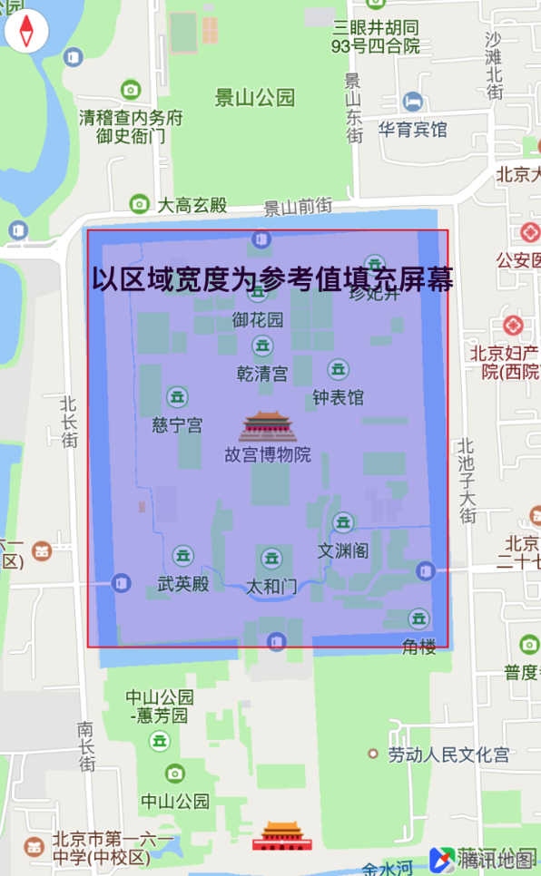
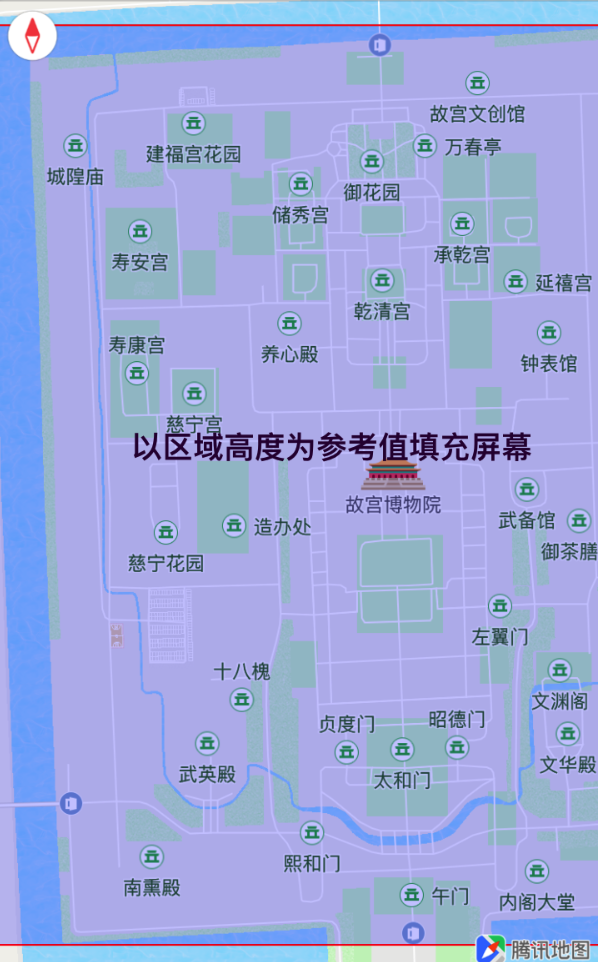

区域限制
1. 简介
腾讯地图SDK为用户提供了区域限制的功能接口，用户可以通过该接口将地图的显示区域固定在某一场景区域当中，当设置生效时，拖动地图不会超出设定的区域。区域限制功能适用于旅游景区、商场等场景，可以搭配腾讯地图SDK的手绘图、瓦片图等功能创造丰富的场景。
2. 接口说明
进行区域限制时，可以调用QMapView中的 setLimitMapRect: mode: 接口， 需传入相应的区域以及对应的区域展示对齐模式
/**
* @brief 根据边界留宽显示限制地图区域范围(2D北朝上场景时)
* @param mapRect 待调整的地理范围
* @param mode 限制地区区域的对齐方式，分等宽对齐和等高对齐
*
* 当传入的mapRect的值都为0时，取消区域限制
*/
-(void)setLimitMapRect:(QMapRect)mapRect mode:(QMapLimitRectFitMode)mode;
注意：限定区域设置生效后，地图的最小显示级别将是限制区域的最小可显示级别，地图默认最大显示级别没有变化。如：设置的限制区域最小可显示级别为14，则地图的最小显示级别为14，用户不能缩放到小于14的显示级别。
3. 生成限制区域mapRect
限制区域接口的mapRect参数是QMapRect结构（平面投影矩形），生成对应的mapRect，用户需找到平面投影矩形左上角和右下角的经纬度坐标，然后通过SDK提供的接口转换成相应的QMapRect，示例如下：
1、根据左上角和右下角的经纬度坐标生成平面投影坐标（QMapPoint），以故宫的矩形为例子：
// QMapPointForCoordinate 接口将经纬度坐标转换为平面投影坐标
QMapPoint mapPoint1 = QMapPointForCoordinate(CLLocationCoordinate2DMake(39.907053,116.395984));
QMapPoint mapPoint2 = QMapPointForCoordinate(CLLocationCoordinate2DMake(39.900436,116.399567));
2、通过两个平面投影坐标生成所需的QMapRect：
/**
* QBoundingMapRectWithPoints(QMapPoint *points, NSUInteger count) 根据平面投影坐标返回外接矩形
*/
// 平面投影坐标 点数组
QMapPoint points[2];
points[0] = mapPoint1;
points[1] = mapPoint2;
// 生成平面投影矩形
QMapRect rect = QBoundingMapRectWithPoints(points, 2);
3、限制区域显示的限制方式
限制区域显示的限制方式有两种，分别以区域宽度为参考值和以区域高度为参考值
typedef NS_ENUM(NSInteger, QMapLimitRectFitMode) {
QMapLimitRectFitWidth = 0, // 此模式会以mapRect宽度为参考值限制地图的控制区域，保证横向区域完全展示
QMapLimitRectFitHeight // 此模式会以mapRect高度为参考值限制地图的控制区域，保证纵向区域完全展示
};
4、进行区域限制
用户生成了所需的QMapRect后可设置限制区域
// 以mapRect高度为参考值限制地图的控制区域
[self.mapView setLimitMapRect:rect mode:QMapLimitRectFitHeight];
// 以mapRect宽度为参考值限制地图的控制区域
[self.mapView setLimitMapRect:rect mode:QMapLimitRectFitWidth];
效果如下：
 
5、地图显示级别
在 1 中提到，限制区域生效后，地图的最小显示级别会产生变化，以下显示级别相关接口会有影响：
设置地图显示级别
// 当限制区域生效时，如果设置的显示级别小于限制区域的最小可显示级别，则设置的显示级别无效
// 如限制区域的最小可显示级别是10，设置显示级别为7则无效
[self.mapView setZoomLevel:7];
设置地图最小、最大显示级别
/* 当限制区域生效时，如果设置的显示级别小于限制区域的最小可显示级别，限制区域最小显示级别不变；
* 如果设置的显示级别大于限制区域的最小可显示级别，限制区域最小显示级别为新设的值；
*/
// 如限制区域的最小可显示级别是10，设置地图最小显示级别为7，限制区域最小显示级别不变，无法缩放到小于10的级别
[self.mapView setMinZoomLevel:7 maxZoomLevel:18];
// 如限制区域的最小可显示级别是10，设置地图最小显示级别为7，限制区域最小显示级别不变，无法缩放到小于10的级别；设置地图最大显示级别为8，限制区域的最大、最小显示级别均为10；
[self.mapView setMinZoomLevel:7 maxZoomLevel:8];
4. 取消区域限制
当需要取消区域限制时，用户可传入一个值都为0的QMapRect取消区域限制，方法如下：
// 当传入的mapRect的四个值为0时，可取消区域限制（无视对齐模式）
QMapRect cancelRect = QMapRectMake(0, 0, 0, 0);
[self.mapView setLimitMapRect:cancelRect mode:QMapLimitRectFitWidth];
注意：取消区域限制后，地图的可缩放区间恢复为地图当前的最小、最大显示级别之间。如果用户设置了限制区域后，通过 setMinZoomLevel: maxZoomLevel: 改变了地图的最小、最大显示级别，取消区域限制后，地图的可缩放区间为最后一个更改的最小、最大显示级别之间。